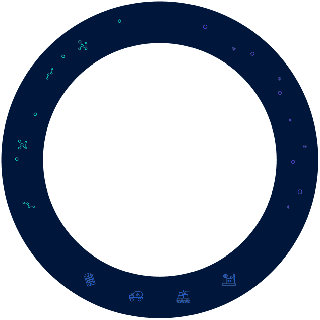
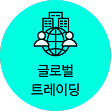
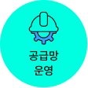
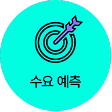
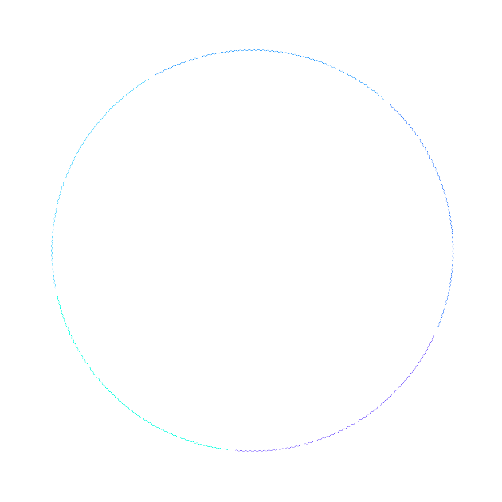

AI NATIVE
ENERGY COMPANY
AI가 내재화된 에너지 플랫폼 기업

도시는 아직 잠들어 있지만,
AI는 이미 하루를 시작했습니다.
오늘 기온은 몇 도인지,
어느 지역에서 가스 사용량이 급증할지,
LNG 운반선은 언제 도착하는지,
국제 에너지 시장은 어떻게 움직이는지.
수많은 데이터를 실시간으로 분석하며
대한민국의 에너지를 준비하고 있습니다.
한국가스공사가 그리는
AI NATIVE ENERGY COMPANY입니다.